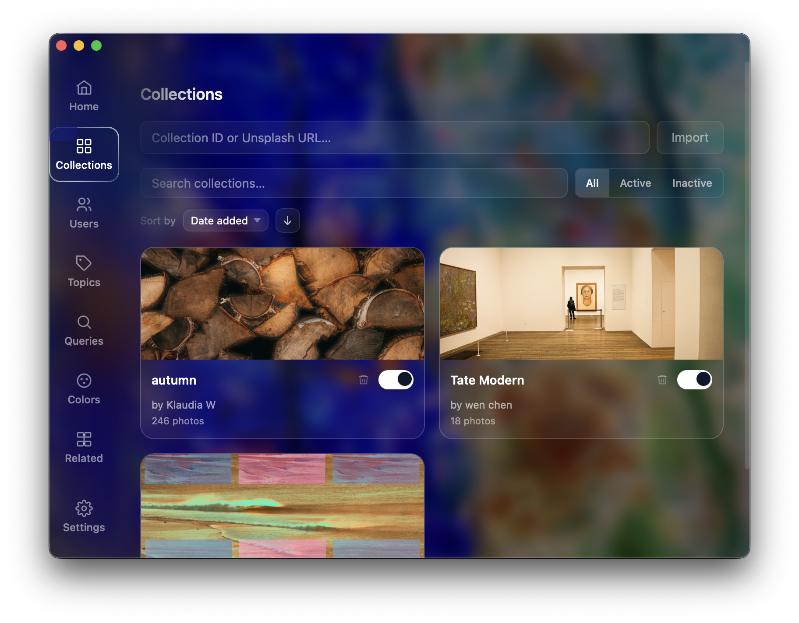
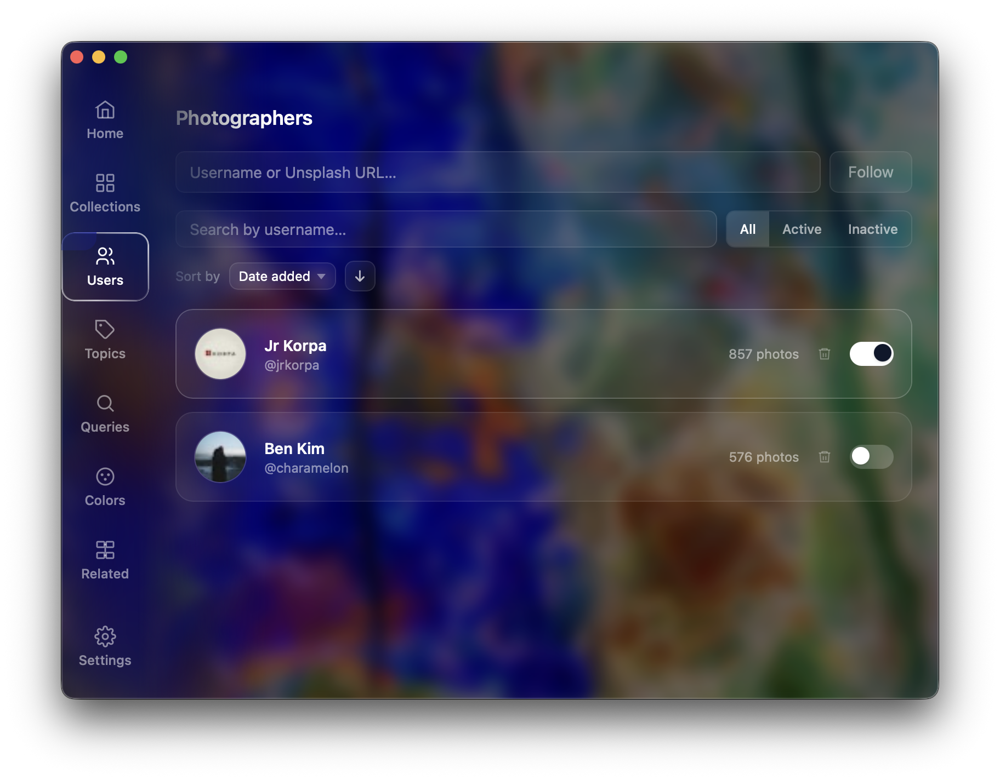
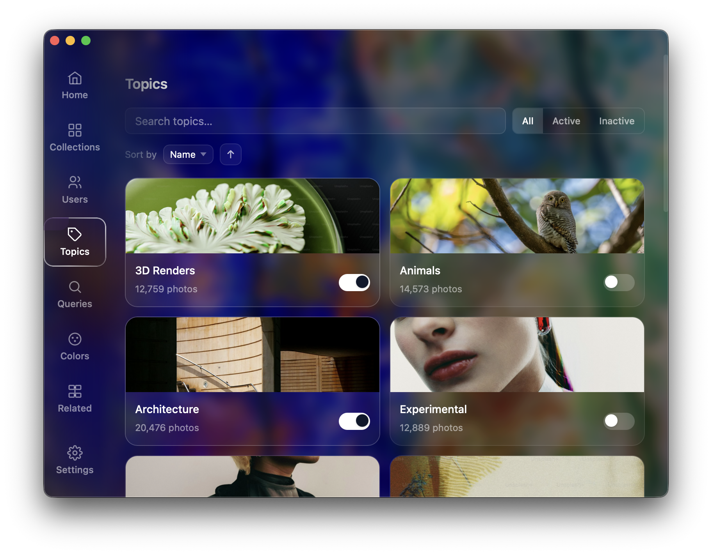
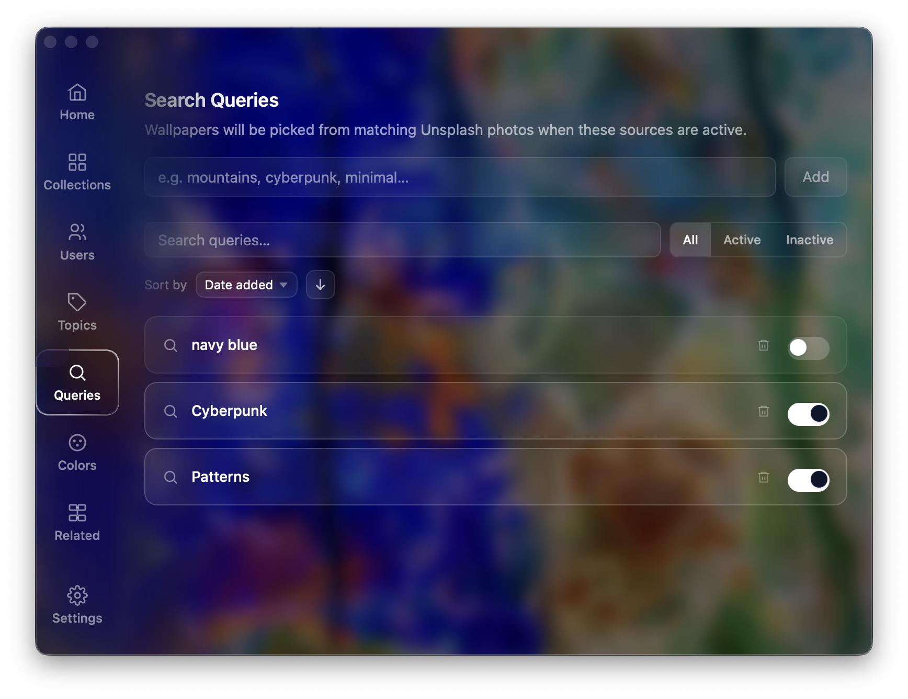
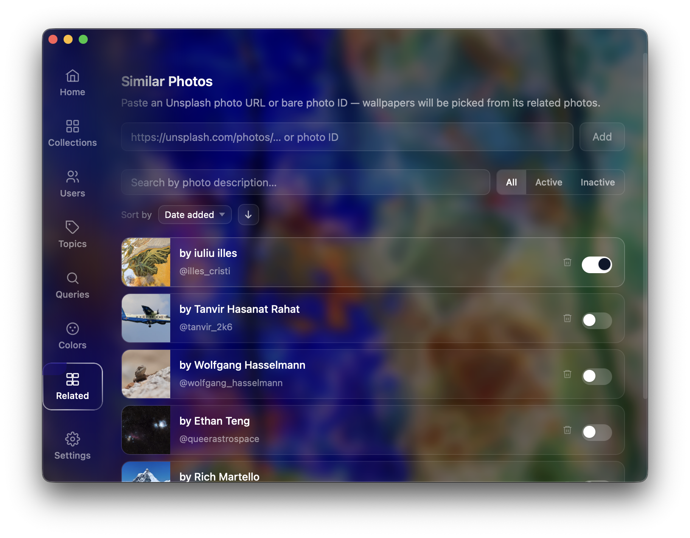
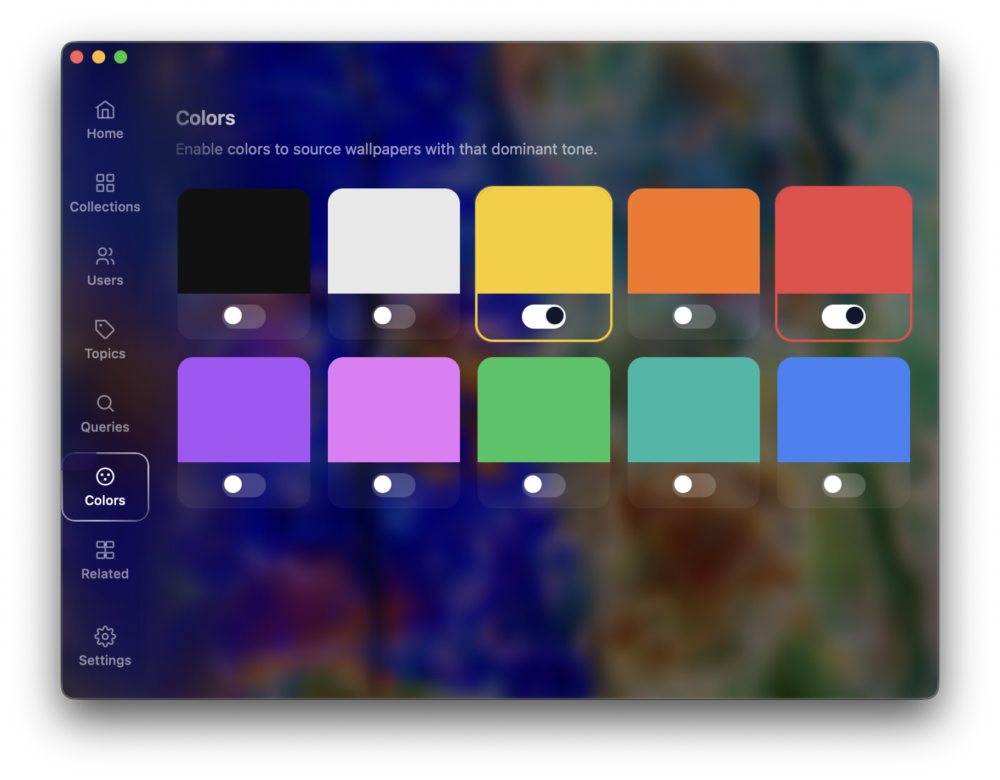

Smart scheduling
Rotate every 30 minutes, hourly, daily, or use a custom expression.
Wallpaper automation for people who care about aesthetics
Splashy is a desktop app powered by the Unsplash API. Mix collections, photographers, topics, colors, and custom searches, then let Splashy refresh your wallpaper on your schedule.

Rotate every 30 minutes, hourly, daily, or use a custom expression.
Pull from Unsplash collections, users, topics, color moods, or keyword queries.
Runs quietly in the tray and can launch automatically on login.






Download the latest release and set up your Unsplash key in under 2 minutes.
Download Latest Release